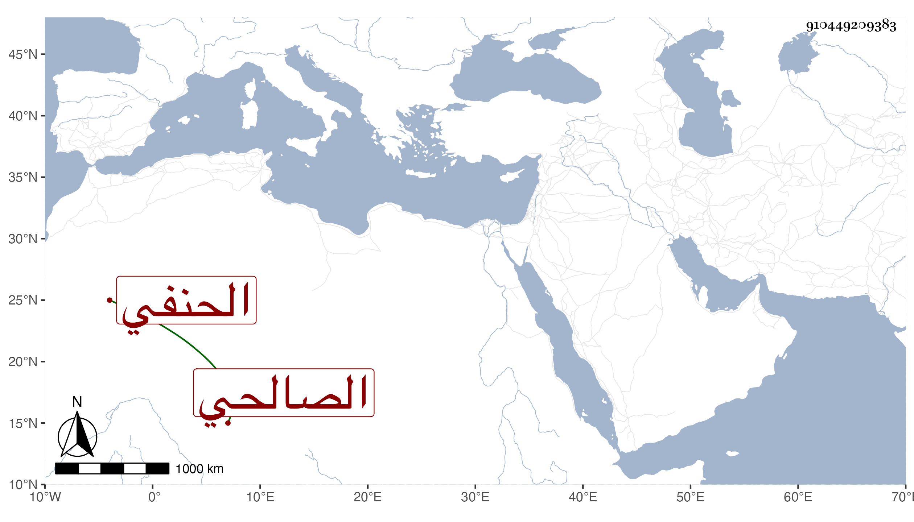

0902Sakhawi.DawLamic.ITO20230111-ara1.EIS1600.910449209383
Biography ID: 910449209383
128
عبد الخالق بن محمد بن إبراهيم بن عبد الرحمن محيي الدين الصالحي الحنفي الآتي أبوه ويعرف بابن العقاب بضم المهملة وتخفيف القاف وآخره موحدة وهو لقب جده . ولد في ذي القعدة سنة ثلاث وخمسين وثمانمائة ونشأ فحفظ القرآن والعمدة والهداية لابن الجزري والكنز في الفقه والمنار في الأصول وألفية النحو وغيرها كالجرومية وعرض على جماعة ولازم الزين قاسم في الفقه وأصوله والحديث وكذا أخذ عن الجوجري وعبد الحق السنباطي في العربية والصرف وعن ثانيهما وكذا العلاء الحصني في المنطق والفرائض والحساب مع الميقات عن البدر المارداني وعلم الكلام وغيره عن البدر بن الغرز وأدمن الأخذ عن الأمشاطي وربما أخذ عن أخيه في الطب ولازمني في قراءة شرحي لهداية ابن الجزري بعد أن حصله بخطه وفي البخاري وغير ذلك ، وجود في القرآن على الزين جعفر وتميز في الميقات وشد البياكيم ونحو ذلك وكتب المنسوب وشارك في كثير من الفضائل وتنزل في بعض الجهات وباشر الرياسة بجامع الحاكم والجانبكية وغيرهما ، وأعرض عن التكسب بعد جلوسه لها وقتا ووثق به غير واحد من المتمولين كالشرف يحيى الريس وابن عواض وغيرهما في ضروراتهم غيبة وحضورا ، وانتفع به ولد أولهم في تركة أبيه والذب عنها كثيرا وترقع حاله بعد أن كان مقلا ، كل ذلك مع عقل وسكون وأدب ودربة ، وحج في موسم سنة تسع وثمانين وجاور التي بعدها وسمع هناك من إمام المقام المحب الطبري والعلاء البغدادي الحنبلي وكان مجاورا أيضا وآخرين .
